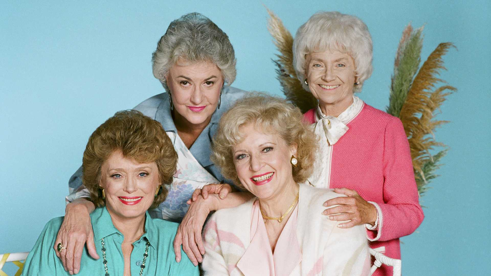

Everybody needs a passion. That's what keeps life interesting. If you live without passion, you can go through life without leaving any footprints.
- Betty White
Betty White was an American legend with a career that lasted over seven decades. She was born in Oak Park, IL on January 17, 1922, but moved to California when she was just over a year old eventually settling in the Los Angeles area. After performing in a play in high school she developed an interest in performing and pursued a career in acting.
Her professional career spanned a wide variety of platforms to include radio, live television, comedy, sitcoms, game shows, variety shows, talk shows, stage, and film. She was the first woman to win an Emmy for Outstanding Game Show Host for Just Men! in 1983. She is perhaps best known though for her roles on The Golden Girls, The Mary Tyler Moore Show, and Hot in Cleveland.
During her career, she earned eight Emmy Awards, a Grammy award, three American Comedy Awards, and three SAG Awards. She is also a member of the Television Hall of Fame and has a star on the Hollywood Walk of Fame.
Her husband, Allen Ludden, whom she met on the game show Password in 1961, and married in 1963, passed away in 1981 from stomach cancer. She was an ardent supporter of animal welfare and worked with many animal and wildlife organizations.
Over the course of Betty White's nearly eighty-year career in show business, she earned the moniker “The First Lady of Television,” and has remained a beloved fixture in popular culture well past her passing on December 31, 2021